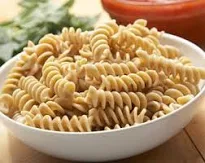

|

|
- Flour (typically all-purpose or semolina)
- Water
- Eggs (optional, but commonly used in egg pasta)
- Salt
- Olive oil (optional, but sometimes added to the dough)
- Parmesan cheese (sometimes added to the dough or used as a topping)
- Garlic (sometimes used in flavored pasta dough)
- Spinach (sometimes used in flavored pasta dough)
- Tomato paste (sometimes used in flavored pasta dough)
|
Instructions
- Bring a large pot of water to a rolling boil. Use about 4-6 quarts of water per pound of pasta.
- Add a generous amount of salt to the boiling water. Aim for about 1-2 tablespoons of salt per pound of pasta.
- Add the pasta to the boiling water, and stir gently to prevent the pasta from sticking together.
- Cook the pasta for the recommended amount of time on the package, stirring occasionally. Be sure to test the pasta for doneness a few minutes before the recommended cooking time is up, as different brands and types of pasta may cook at different rates.
- Reserve about 1 cup of the pasta cooking water before draining the pasta.
- Drain the pasta in a colander, shaking gently to remove excess water.
- Return the pasta to the pot or a large bowl, and toss it with a bit of olive oil or butter to prevent sticking.
- Serve the pasta immediately, topped with your favorite sauce and any additional toppings or garnishes. If the pasta seems dry, you can add a bit of the reserved cooking water to moisten it.